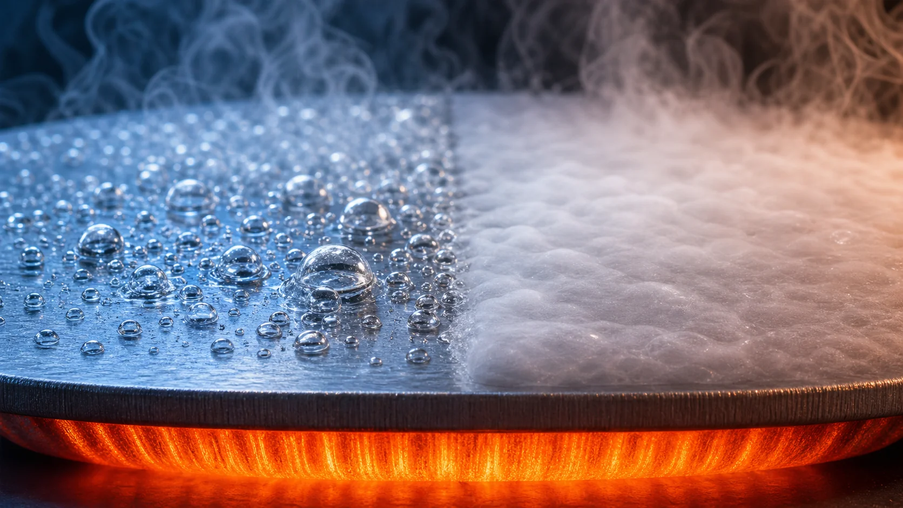
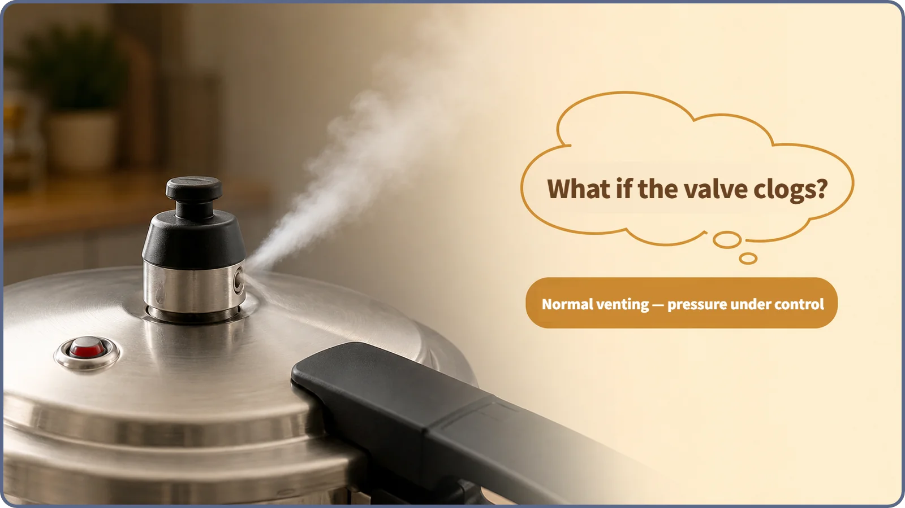
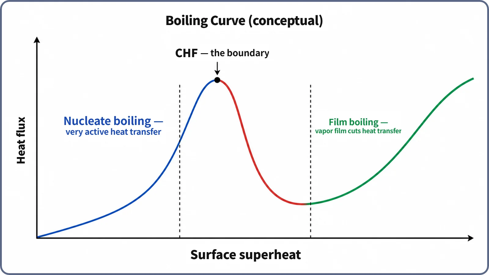

Heat Transfer & Thermal Hydraulics · 134
While the Pressure Cooker Vents Politely — Is Boiling Good or Bad?
Small bubbles carry heat away like tiny elevators, until there are too many. The boiling curve shows where help turns into hindrance.

Boiling can help or hurt heat transfer, depending on which kind it is. In nucleate boiling, small bubbles carry away latent heat and stir the water, so the heat transfer coefficient rises sharply. Past a limit called the critical heat flux (CHF), or departure from nucleate boiling (DNB), a vapor film can blanket the surface and act like insulation. Reactors are designed and operated with a thermal margin to that boundary.
While the valve vents steadily
Close a pressure cooker, turn up the heat, and the little safety valve soon lets out a steady hiss of steam. As long as steam escapes through the valve normally, the pot holds the right pressure and temperature and cooks quickly; the venting itself signals that things are under control. If the valve clogs, steam can't escape, pressure builds, and things can turn dangerous. Same boiling water, completely different story.

Reactor coolant follows the same pattern. When small bubbles form regularly on the fuel surface and leave it, that is nucleate boiling, the controlled state, in which heat transfer gets much better. When the whole surface is blanketed by vapor, that is film boiling, the "clogged valve" state, in which heat transfer gets much worse.
When bubbles become heat elevators
Turning liquid into vapor takes far more heat than warming it. Besides the sensible heat that raises temperature, changing state needs a much larger latent heat, and every bubble that breaks away carries it off. Bubbles forming, growing and detaching also stir the water next to the surface vigorously. Together these make the heat transfer coefficient (h) markedly larger than in single-phase convection; exactly how much larger depends on fluid, pressure, flow speed and surface.
The boiling curve
The boiling curve plots the heat leaving a surface (heat flux) against how much hotter the surface is than the boiling point at that pressure (surface superheat).

- Low superheat: no bubbles yet, only ordinary convection.
- Nucleate boiling: bubbles form at many spots, and a small rise in superheat makes the heat flux shoot up. This is the good region.
- CHF / DNB: bubbles become too numerous and merge, and the heat flux peaks. This is the limit of nucleate boiling, a boundary, not a cliff edge or an accident.
- Film boiling: a stable vapor film blankets the surface. Vapor conducts heat far worse than water, so the same heat has trouble getting out and the surface temperature soars.
The relationship can still be written as q″ = h × ΔT. What changes is h itself: much better in nucleate boiling, sharply worse in film boiling.
How plants live with this boundary
A pressurized water reactor (PWR) may allow subcooled nucleate boiling on parts of the core surface, where small bubbles form and then condense in the cooler surrounding water, which helps heat transfer at that spot. A boiling water reactor (BWR) deliberately boils its coolant in the core and sends the steam straight to the turbine. How much boiling each allows varies with design and operating conditions.
Both share one line they never intend to cross: CHF/DNB. Designers and operators continuously check how much room operating conditions leave before it, using indicators such as the minimum DNB ratio (MDNBR). That room is the thermal margin, and securing it is one of the core safety goals of reactor thermal-hydraulic design and operation.
Easy to mix up
| Term | What it is |
|---|---|
| Boiling | The broad category of heat transfer with a phase change |
| Nucleate boiling | Bubbles form and leave regularly; h is high (good) |
| CHF / DNB | The limit of nucleate boiling; a boundary, not an accident |
| Film boiling | A vapor film blankets the surface; h drops (bad) |
| BWR steam production | Normal operation designed within nucleate (or similarly stable) boiling, not film boiling |
Crossing CHF/DNB into film boiling makes the surface temperature rise sharply, and if that rise is large enough and lasts long enough it can lead to fuel damage. It is a possible pathway, not instant failure the moment the line is crossed.
Key takeaways
- Boiling can be good or bad; what matters is which kind.
- Nucleate boiling greatly raises h through latent-heat transport and vigorous mixing.
- Its limit, CHF/DNB, is a boundary between nucleate and film boiling, not the moment of an accident.
- Beyond it, a vapor film acts like insulation, h drops and the surface temperature soars, which is why plants keep a thermal margin.